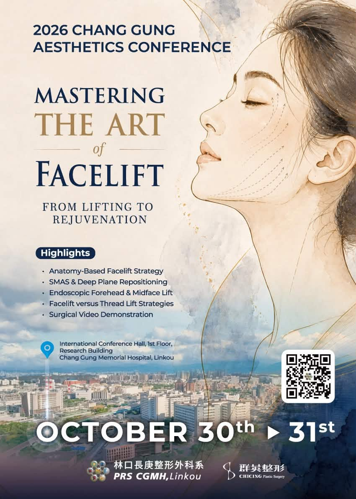

2026 長庚美容會議 (CGAC)：精通拉皮手術之藝

會議簡介
林口長庚紀念醫院整形外科系隆重宣布，2026 長庚美容會議（Chang Gung Aesthetics Conference, CGAC 2026） 將於2026年10月30日至31日，假林口長庚紀念醫院研究大樓國際會議廳盛大舉辦。
本次會議以「Mastering the Art of Facelift：From Lifting to Rejuvenation（精通拉皮手術之藝：從提拉到回春）」 為年度主題，將集結國內外整形美容領域的傑出專家，深入探討拉皮手術的最新進展， 從解剖學基礎策略、SMAS 與深層平面（Deep Plane）的重新定位，到內視鏡前額及中臉拉提、 拉皮與線雕的術式抉擇，並透過全程手術影片示範，全方位解析臉部回春的藝術與創新。
CGAC 2026 — Mastering the Art of Facelift
會議日期
10/30-31, 2026
會議地點
林口長庚國際會議廳
講者陣容
國內外大師
教學特色
手術影片示範
核心主題涵蓋
- 解剖學基礎的拉皮策略（Anatomy-Based Facelift Strategies）
- SMAS 與深層平面重新定位（SMAS & Deep Plane Repositioning）
- 內視鏡前額與中臉拉提（Endoscopic Forehead & Midface Lift）
- 拉皮與線雕的術式抉擇（Facelift vs. Thread Lift Approaches）
- 手術影片實戰示範（Surgical Video Demonstrations）
- 臉部回春概念與創新（Facial Rejuvenation Concepts & Innovations）
會議地點與交通
地點：林口長庚紀念醫院 研究大樓一樓 國際會議廳
地址：桃園市龜山區復興街5號
交通：鄰近桃園機場捷運 A8 長庚醫院站，交通極為便利